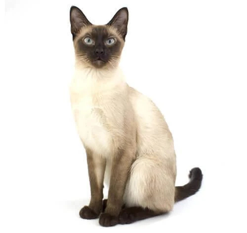
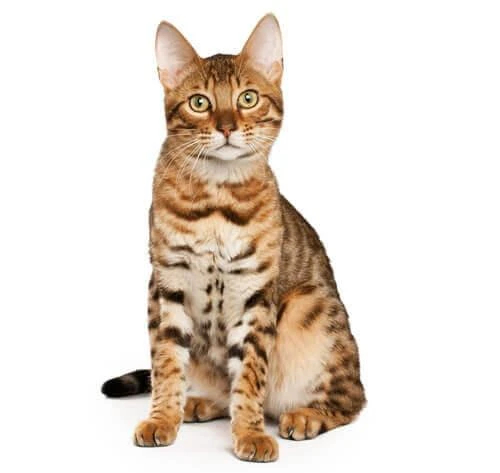

Интересные факты о кошках
Ко́шка (лат. Felis catus) — домашнее животное, одно из наиболее популярных (наряду с собакой) «животных-компаньонов».
С точки зрения научной систематики, домашняя кошка — млекопитающее семейства кошачьих отряда хищных. Одни исследователи рассматривают домашнюю кошку как подвид дикой кошки, другие — как отдельный биологический вид.
Являясь одиночным охотником на грызунов и других мелких животных, кошка — социальное животное, использующее для общения широкий диапазон звуковых сигналов, а также феромоны и движения тела.
В настоящее время в мире насчитывается около 600 млн домашних кошек, выведено около 200 пород, от длинношёрстных (персидская кошка) до лишённых шерсти (сфинксы), признанных и зарегистрированных различными фелинологическими организациями.
На протяжении десяти тысяч лет кошки ценятся человеком, в том числе за способность охотиться на грызунов и других домашних вредителей, а также за способность развлекать и снимать стресс.
Некоторые популярные породы:
Сиамская кошка
Персидская кошка

Мейн-кун

Бенгальская кошка
Ещё больше пород можно увидеть на странице с породами.
Советы по уходу за кошками
Узнайте, как правильно ухаживать за вашими пушистыми друзьями. В этом разделе вы найдете полезные советы по питанию, уходу за шерстью, гигиене и поддержанию здоровья вашего кота. Посетите раздел по уходу за котами, чтобы узнать больше.
Форум для любителей кошек
Общайтесь с другими владельцами кошек, делитесь опытом, обсуждайте породы и задавайте вопросы на нашем форуме. Это отличное место для того, чтобы найти единомышленников и узнать больше о кошках.